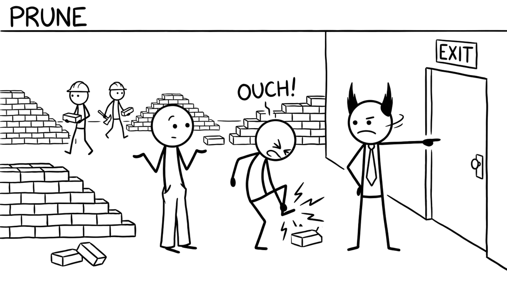

<section id="cap-prune" data-transition="fade" style="display:flex; align-items:center; justify-content:center; padding:0; background:#fcfcfa">

<p style="position:absolute;left:0;bottom:10px;width:1920px;margin:0;text-align:center;font-family:'Patrick Hand', 'Trebuchet MS', sans-serif;font-size:22px;color:#8a8f98">Copyright Dobromir Montauk 2026</p>
<aside><b>Prune.</b> Sometimes capacity goes up when someone leaves.<br>- One person who blocks every review, or who the team quietly routes around, slows down everyone near them.<br>- Values rarely change; skills can. Coach skill gaps. When it's values, move faster than feels comfortable.<br>- Be clear early: written expectations, a real plan, a date. Nobody should be surprised.<br>- "Not firing fast enough" is one of the most common regrets of experienced managers.<br>Do it with dignity. The rest of the team is watching how you treat people on the way out.</aside>
</section>
